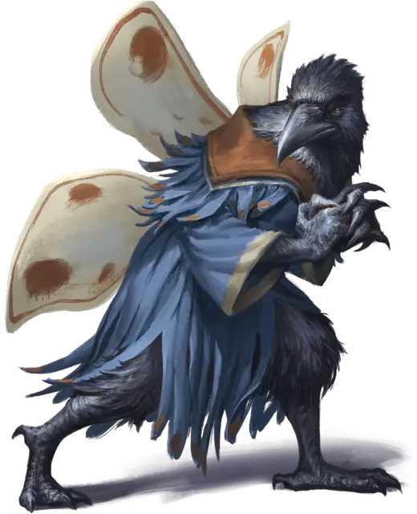

Кенку Парочайник
Kettlesteam the Kenku
Средний Гуманоид (Кенку, Колдун), хаотично-нейтральный, именной НИП

Класс Доспеха 13
Хиты 22 (5к8)
Скорость 30 футов
| мод | спас | ||
|---|---|---|---|
| СИЛ | 10 | +0 | +0 |
| ЛОВ | 16 | +3 | +3 |
| ТЕЛ | 10 | +0 | +0 |
| мод | спас | ||
|---|---|---|---|
| ИНТ | 11 | +0 | +0 |
| МДР | 10 | +0 | +2 |
| ХАР | 16 | +3 | +5 |
Навыки Восприятие +2, Магия +2, Обман +5, Расследование +2, Скрытность +5, Убеждение +5
Чувства пассивное Восприятие 12
Языки Общий, Ауран
Опасность 1 (200 опыта)
Бонус мастерства +2
Особенности
Языки. -понимает Ауран и Общий, но говорит только с помощью особенности Подражание.
Подражание. Кенку может подражать любым звукам, которые он уже слышал, включая голоса. Существо, слышащее эти звуки, может понять, что это подражание, если совершит успешную проверку Мудрости (Проницательность) Сл 14.
Действия
Мультиатака. Парочайник совершает две атаки кинжалом.
Кинжал. Рукопашная или дальнобойная атака оружием: +5 к попаданию, досягаемость 5 футов или дистанция 20/60 футов, одна цель. Попадание: 5 (1к4 + 3) колющего урона.
Использование заклинаний. Парочайник накладывает одно из следующих заклинаний, используя Харизму в качестве базовой характеристики (Сл спасброска от заклинаний 13):
• Неограниченно: маскировка [disguise self], дружба [friends], волшебная рука [mage hand], малая иллюзия [minor illusion];
• 1/день каждое: проклятие [bestow curse], огонь фей [faerie fire], разговор с животными [speak with animals].
Сумеречный сон (2/день). Парочайник нацеливается на одно существо, которое она может видеть в пределах 10 футов. Цель окутывается облаком магического, вызывающего сон газа и должна преуспеть в спасброске Телосложения Сл 13, иначе потеряет сознание на 1 минуту. Существо, усыпленное этим газом, мгновенно просыпается, если оно получает урон или если кто-то использует действие, чтобы встряхнуть или ударить спящего, чтобы разбудить его.
Описание
Кенку Парочайник шныряет по карнавалу под прикрытием заклинания маскировка [disguise self], пытаясь нашкодить. Кенку украл голос человека-мима по имени Кэндлфут (см. "Зал иллюзий" ранее в этой главе). Пока этот приз остается в ее распоряжении, Парочайник может четко говорить мягким, шелковистым голосом Кэндлфута.